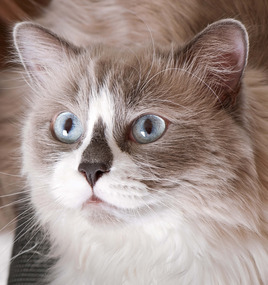

- There are over 100 different cat breeds
- The average age for an indoor cat is 15 years while the average age for an outdoor cat is only 3-5 years
- The largest breed of cat is the Ragdoll. Males weigh 12-20 pounds, with females weighing 10-15 pounds
- Cats can see in colour – they are partially colour blind
- Cats are the sleepiest of all mammals. They spend an average of 16 hours sleeping each day
- A cat can jump 5 times as high as it is tall
- The oldest cat known, lived to the grand age of 36
- Cats respond more readily to names that end in an “ee” sound
- The nose pad of a cat is ridged in a pattern that is unique, just like the fingerprint of a human
- Cats lap liquid from the underside of their tongue rather than from the top when drinking

